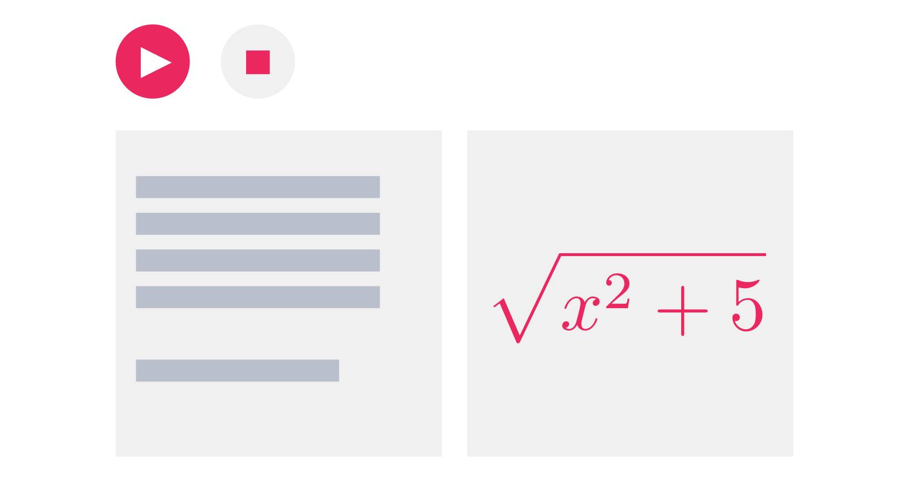
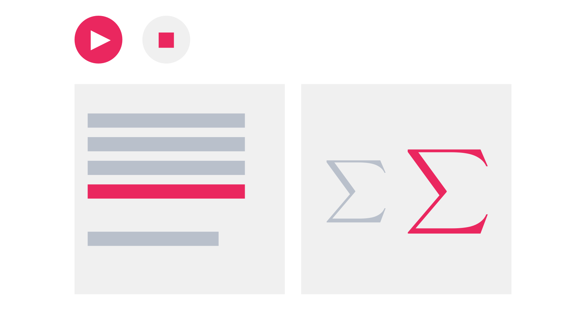
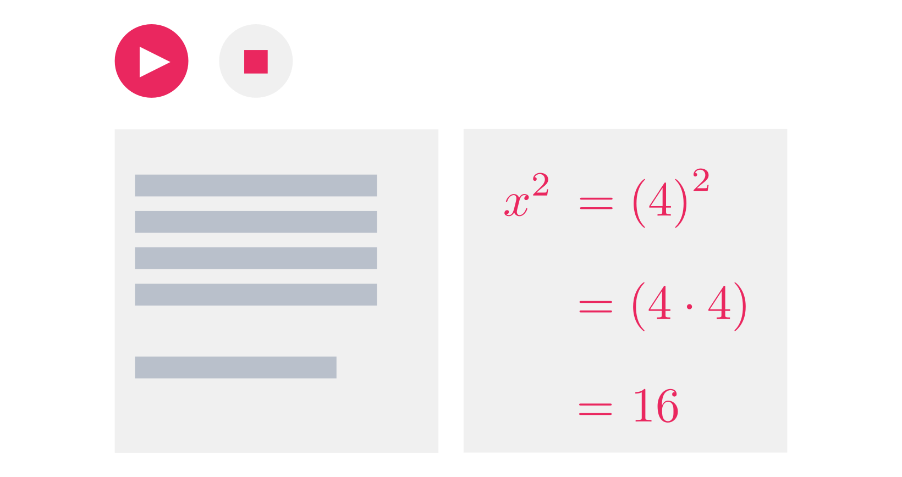

Project proposal by:
Alexandra Cheng & Oskar Garcia
In a nutshell we believe code can augment mathematics and make it more accessible.
GSoC raw from Alex & Oskar on Vimeo.
p5 Math In Motion would be a library that renders interactive math notation inside p5.js projects with the help of Katex, an open-source library for rendering math notation on the web.
It would contain functions that make it easier for people to use math expressions inside their p5.js projects, and to export their work into other formats.
The library would also contain functions that help users select and customize entire expressions or individual symbols.
Most fun of all, the library would contain functions that can animate transitions between expressions and symbols, making it easy to build animated solutions and explanations inside p5.js
Educators could have an opportunity to integrate motion and interactivity into their math curriculum. They could also reach wider audiences since p5.js can scale through the web with projects that can be created, edited, and shared amongst the community. It would also be interesting to see what happens when we free educators from the confines of static text over a blackboard.
Learners would have an opportunity to experience math in a dynamic medium, while having the opportunity to play around with mathematics beyond pencil and paper.
Designers and artists would find it easier to add beautiful mathematical notation into their projects, and to export their expressions into different formats. They would also have access to beautiful symbols which are generally obscured in common text editors.
We believe math should jump into a fully digital medium, and p5.js is a great option for starting that transition.
Alexandra Cheng is majoring in Computer Science and Mathematics at Barnard College, Columbia university.
Oskar Garcia is majoring in Computer Science and Data Science at Columbia university.
This project proposal was inspired by our love for math, and because we dream of a day when we can easily play around with math symbols on digital screens. We were looking for an opportunity to dive deep into JavaScript while contributing something meaningful to the OpenSource community.
Also, math + code = awesome.
Pre-GSoC | APR 9 – MAY 6 | We plan to touch base with Daniel Shiffman, our mentor, as well as Emily Eisenberg and Sophie Alpert, the creators of Katex. We also want to get better acquainted with JS, P5, and Katex as much as we can during this warm-up time
Community Bonding | MAY 9 - MAY 27 | We plan to run design sprints based on our mentor's feedback, in order to produce prototypes that would eventually turn into library components. We want to interview members of the community to pinpoint their needs and gather their feedback, followed by a round of user testing with our prototypes. This would conclude with a final list of components for production.
Coding | MAY 27 - AUG 19 | We plan to work on production while getting some early feedback from users, and adjusting the code as we progress.
Submission and Final Evaluation | AUG 19 - AUG 26 | Submit our code to the repository, and finish off with the final evaluation.
Go out and celebrate. Pizza is mandatory.